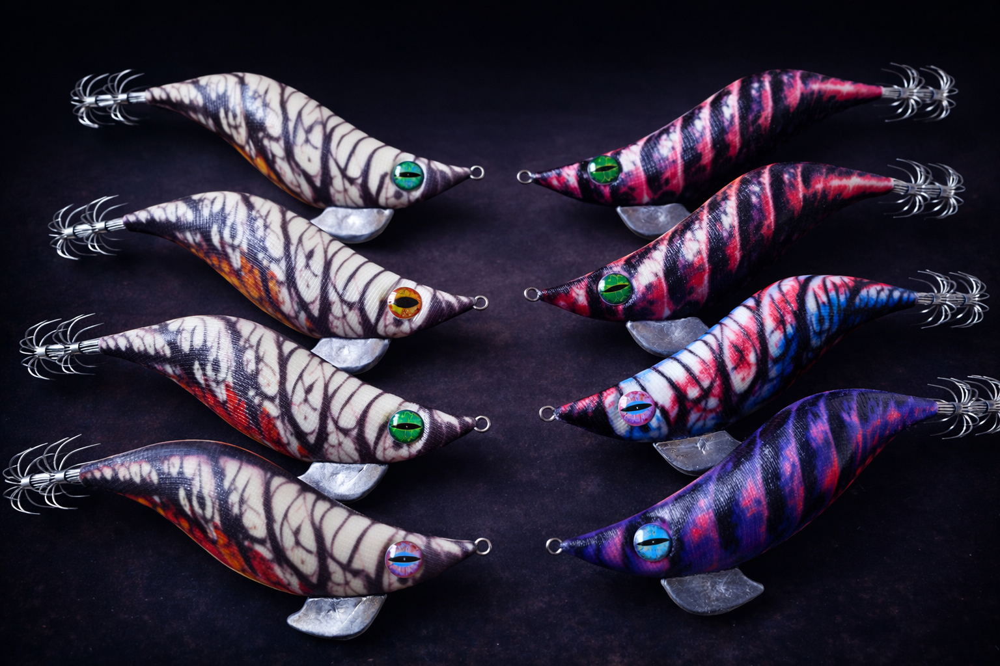
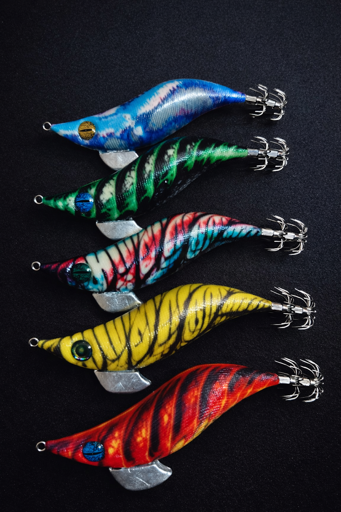
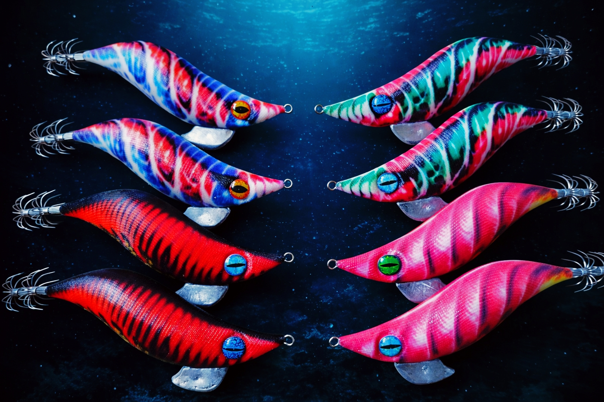
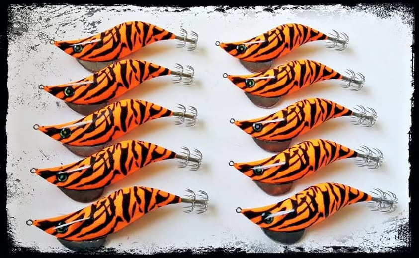

Más vendida
NEKO Shadow Cat 3.5
Terminada en resina epoxi sobre base blanca. Patrón fosforescente de activación rápida para profundidades medias.

EGING es tu espacio sobre pesca de calamares: material recomendado, guías útiles, ropa personalizada y poteras artesanas fabricadas por NEKO LURES.
La web gira alrededor del eging como modalidad, mientras NEKO LURES firma las poteras, la ropa y la identidad de producto.
Las poteras de NEKO LURES salen de tus manos: pintadas, equilibradas y pensadas para pescadores que valoran lo artesanal.
Se recomienda material que funciona en condiciones reales, no lo que más paga. Primero se prueba, luego se recomienda.
NEKO LURES / NK firma productos con estilo propio: poteras, ropa y diseños que no son copia de catálogo.
EGING reúne guías, experiencia real y contenido para gente que pesca calamares de verdad.
Tiradas cortas. Patrones propios. Cada modelo responde a lo que el calamar quiere, no a lo que el mercado fabrica en serie.
Terminada en resina epoxi sobre base blanca. Patrón fosforescente de activación rápida para profundidades medias.

Terminada en resina epoxi sobre base blanca. Patrón fosforescente de activación rápida para profundidades medias.

Terminada en resina epoxi sobre base blanca. Patrón fosforescente de activación rápida para profundidades medias.

Terminada en resina epoxi sobre base blanca. Patrón fosforescente de activación rápida para profundidades medias.
Las poteras NEKO son piezas artesanales en tiradas cortas. La disponibilidad puede variar según modelos y colores.
Camisetas, sudaderas y diseños personalizados de NK / NEKO LURES para quienes viven el eging dentro y fuera del agua.
Algodón de buena calidad, serigrafía cuidada y diseño limpio con identidad NK.
Perfecta para madrugadas frescas, salidas en costa y quienes quieren una prenda con presencia real.
Camisetas, sudaderas y otros formatos personalizados con tus diseños o ideas de marca.
Selección de material recomendada con criterio real de pesca. Algunas recomendaciones pueden incluir enlaces de afiliado, siempre sin coste extra para ti.
Nota editorial: algunas recomendaciones de esta sección pueden incluir enlaces de afiliado. Eso no cambia la selección ni supone un coste extra para ti.
Artículos técnicos escritos desde la experiencia, no desde el ruido. Para aprender eging como se aprende en el agua.
Talla, peso, tipo de hundimiento y color. Lo que conviene entender antes de comprar por impulso.
Una explicación clara para separar mitos, manías y situaciones donde cada factor realmente importa.
Rango EGI, longitud y acción explicados de forma útil y sin tecnicismos innecesarios.
Cuándo merece la pena afinar diámetro y cuándo solo estás complicando más de la cuenta tu equipo.
Cada potera NEKO es pintada, acabada y equilibrada a mano. No es una marca de catálogo.
Solo se recomienda lo que realmente tendría sentido usar en una jornada real de eging.
Los patrones de NEKO LURES nacen del agua, la experiencia y una estética propia.
Sin humo. Si algo no merece la pena, no se recomienda. Si funciona, se explica por qué.
Guías, material recomendado, poteras artesanas de NEKO LURES y ropa personalizada. Todo en un solo sitio, sin humo.